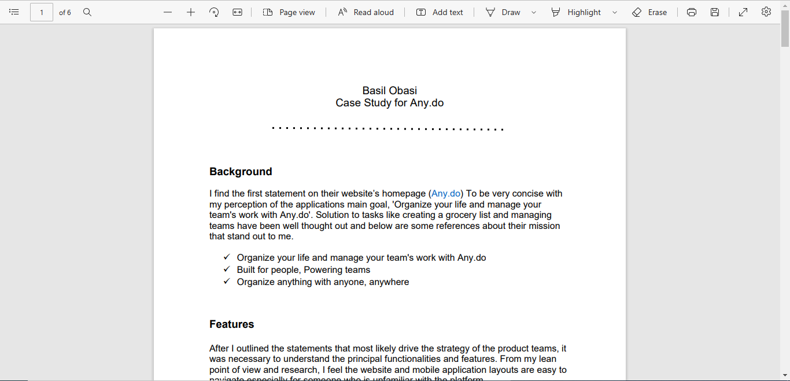

Work
Every project can/should be approached as a stand alone product, from concise conceptualization to post launch maintenance and iterations.

LL Sprint Backlog
User story prioritization based on criticality

LL PRD
Detailed fluid PRD

LL Product Vision
Qualitative market analysis

LL Design Sprint
Deciding the sprint focus, prototyping, handoffs

Case Study for Any.do
Discovery and implementation experiment